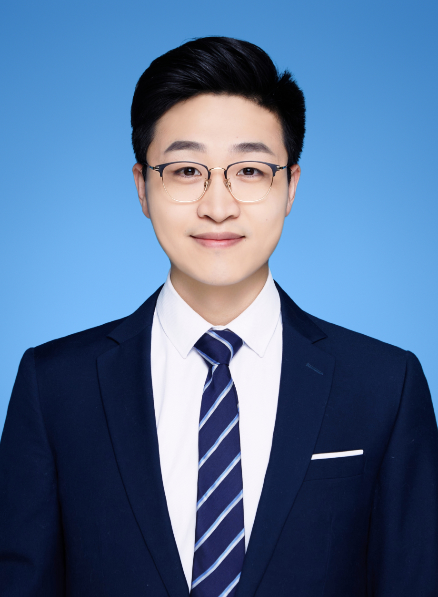
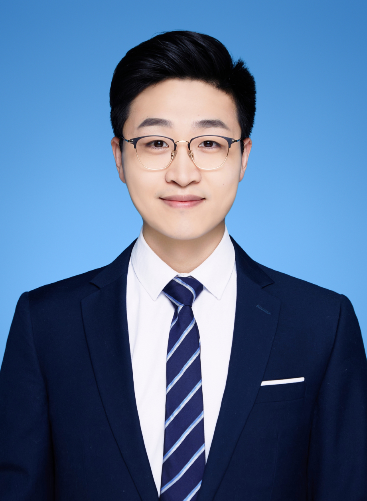
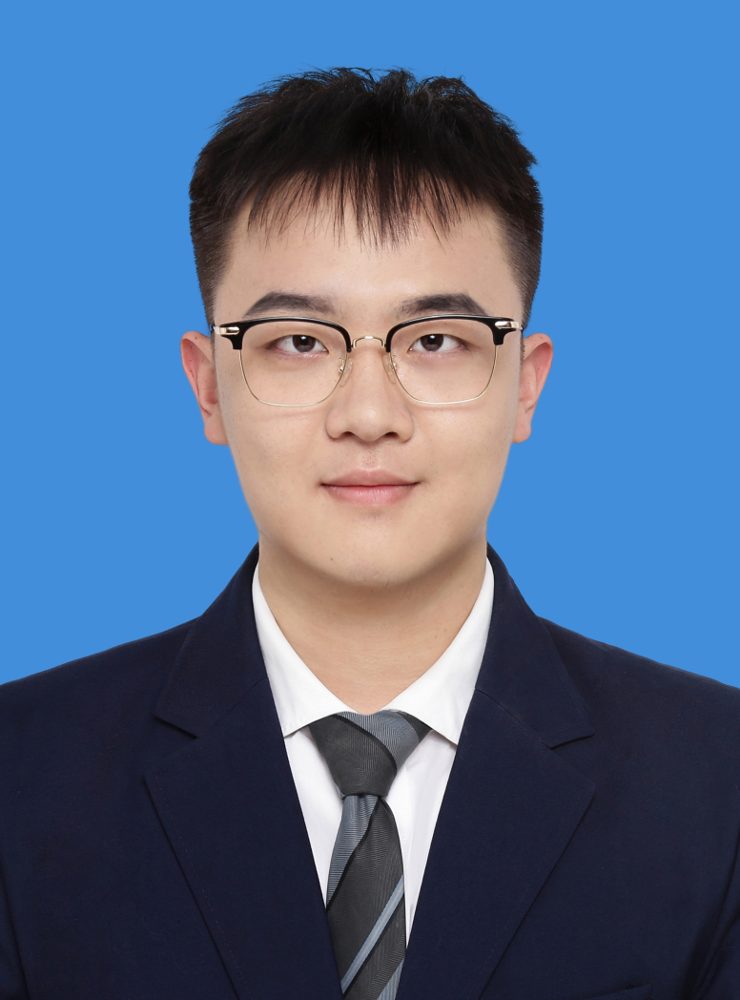
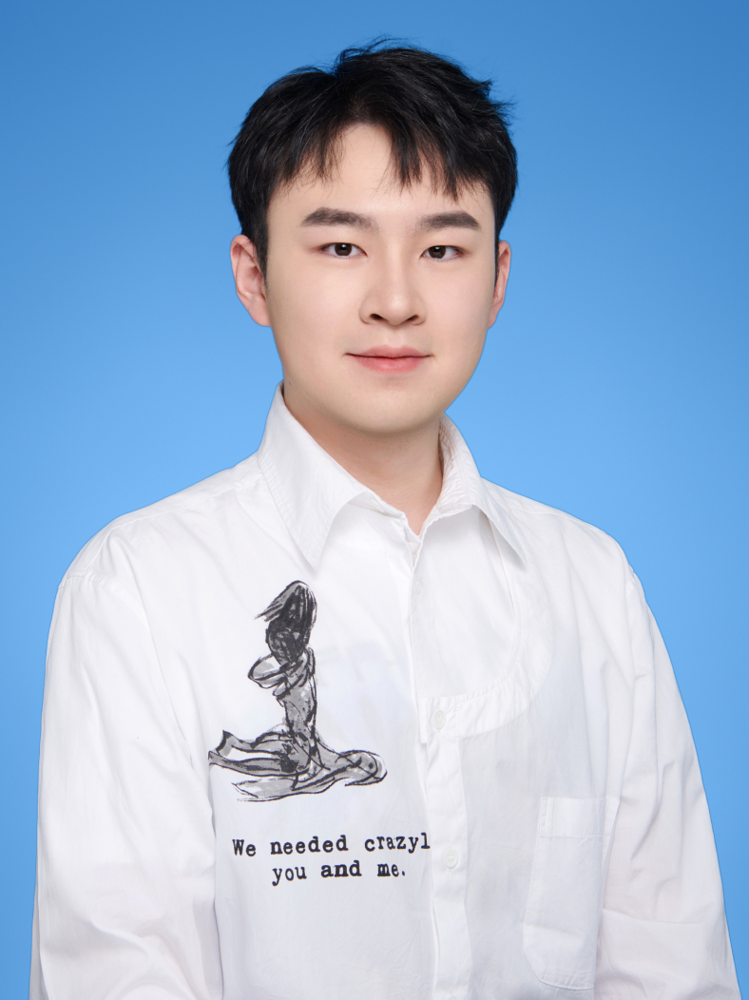
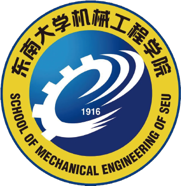
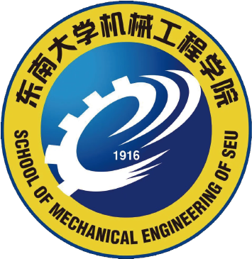

Team

 Team
News
Research
Publications
Gallery

Team
News
Research
Publications
Gallery

Qianqian Wang
Professor, School of Mechanical Engineering Southeast University
Jiangsu Key Laboratory for Design and Manufacture of Micro-Nano
Biomedical Instruments
Qianqian WANG is current a Professor at the School of Mechanical
Engineering, Southeast University (SEU), Nanjing, China. He received his
Ph.D. in Mechanical and Automation Engineering at The Chinese University
of Hong Kong (CUHK) in 2020. Before joining SEU, he was a Postdoctoral
Fellow in the Department of Mechanical and Automation Engineering at
CUHK. He has published more than 40 papers in peer-reviewed journals,
including Science Advances, Science Robotics, Nature Communications, ACS
Nano and IEEE Transactions series (T-CYBER, T-MECH, T-ASE, T-BME), and
presented his work in IEEE ICRA, IROS .etc. Several of his journal
papers have been indexed as ESI Highly Cited Papers and Hot Papers (Top
0.1%) and have been highlighted in Nature News and international press
reports. His research focuses on the micro-/nano-robotics field,
including collective behaviors of micro/nanorobots, medical
imaging-guided delivery, and micromanipulation. He has been selected
into National High-level Young Scholar Program (overseas).
Southeast University Jiulonghu Campus, Mechanical Building, Room 355.
https://
scholar.google.com/
citations?
user=Qf45pSsAAAAJ&
hl=en&oi=ao
qqwang@seu.edu.cn
Ph.D Student
Yimin Sun
Yimin Sun, who graduated with a master's degree from the School of
Mechanical Engineering at Nanjing University of Science and Technology,
joined Qianqian Wang's group in 2023, where he will spend his Ph.D.
in the areas of automated magnetic manipulation control algorithms and
deep learning.

Haoyu Zhang
Haoyu Zhang will join in our research club in 2024. He is currently
working toward the Eng. degree with the Southeast University, Nan Jing,
China. His research interests collective behaviors of micro/nanorobots,
design and control of swarm system.
" We look forward to the next person who will create the future with us. "
M.Eng Student
Yuanbiao Ma
Mr. Yuanbiao Ma joined Qianqian Wang's team in 2023. He received
his Bachelor of Engineering degree in mechanical engineering from Hefei
University of Technology in 2023. His research interests include
magnetically controlled soft robotics and control system based on
permanent magnet.
Ying Cao
Mr. Ying Cao joined Qianqian Wang's team in 2023. He received his
Bachelor of Engineering degree from the School of Mechanical Engineering
in Hefei University of Technology in 2023. His research interests focus
on automated magnetic control of microrobots and construction of
magnetic mobile device.

Qijun Yang
Mr. Qijun Yang joined our team in 2023. He received his Bachelor of Arts
degree in 2021 from Sichuan Normal University. His research interests in
multimodal Human-Computer interaction.
Bin Wang
Mr. Bin Wang will join our group in 2024. Mr. Bin Wang received his
exemption from Southeast University in 2023 after research study in Mr.
Qianqian Wang's group. His main research interests are magnetron 3D
printing and related applications.
Jiansheng Du
Mr.JianSheng Du will join our group in 2024. JianSheng Du received his
exemption from Southeast University in 2023 afterresearch study in Mr.
Qianqian Wang'sgroup.His main research interests are ultrasound
imaging in microrobotic control.
" We look forward to the next person who will create the future with us. "
 Team
News
Research
Publications
Gallery
Team
News
Research
Publications
Gallery
 

Prof. Qianqian Wang, Intelligent Small-scale Robotics Lab, Southeast
University